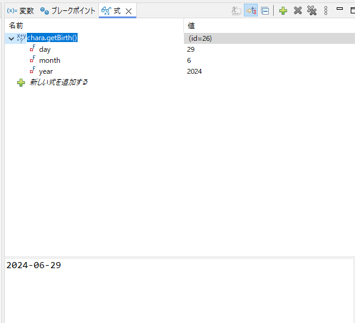

この状態でデバッグ実行を行うと、ブレークポイントを設定した箇所で処理が一時停止される。

デバッグのパースペクティブが開かれる。

この一時停止中からは次のようなことができる。
- 一時停止した状況での変数の値確認 変数の値は画面右側の変数ビューから確認できる。
- 一時停止した状況での実行したメソッドの実行結果確認 式ビューに新しい式を追加し、メソッドを記述すれば、そのメソッドの実行結果が確認できる。 
- 処理の進行、または終了
- 再開 F8
- プログランの終了まで実行する。途中にブレークポイントがあれば、また一時停止する。
- 終了 Ctrl+2
- 処理を中断する。
- ステップイン F5
- 次の行に進む。別メソッドをコールする場合、そのメソッドに入って一時停止する。
- ステップオーバー F6
- 次の行に進む。別メソッドをコールする場合、そのメソッドの処理を行い、次の行に進む。
- ステップリターン F7
- 実行中のメソッドのReturnまでを行い、呼び出し元のメソッドに戻った時点で一時停止する。
- 再開 F8